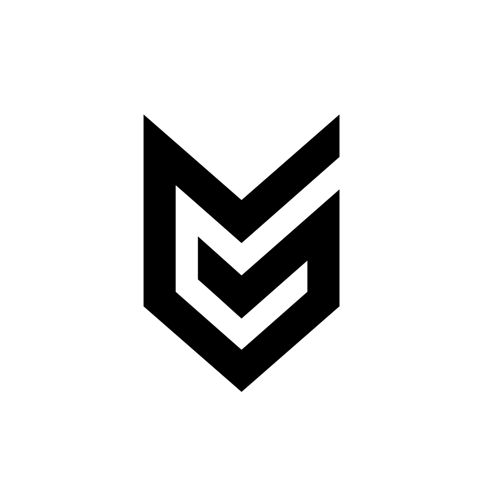
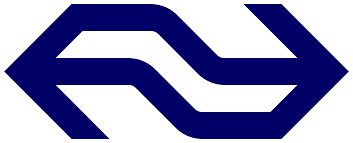
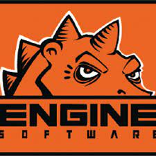

Guerrilla
Guerrilla games is een gamedevelopment bedrijf gevestigd in Amsterdam, Nederland.
Voor gamedevelopment heb je vooral software engineers, programmers of computer scientists nodig. Grote
games die ze hebben gemaakt zijn:
- de Killzone series.
- horizon zero dawn.
Ze hebben de hele game in Decima engine gemaakt, en zelfs deze engine is grotendeels ontwikkeld door ze.
Het ziet er uit als een leuk bedrijf om te werken. Zo zijn er vele voordelen om hier te werken: sony
product korting, gym lidmaatschap kortingen, massage service ect. Het klinkt dus echt als een bedrijf
waar iedereen elkaar best goed kent en waar vanalles te doen is.
Het lijkt me erg leuk om voor dit bedrijf te werken. Je werkt aan grote projecten die erg veel gebruikt
worden.
Kijkend naar de website ziet het eruit als een gezellig bedrijf.

Nederlandse Spoorwegen
NS is natuurlijk een heel erg groot bedrijf. Omdat het zo groot is hebben ze
natuurlijk ook heel veel software engineers en developers nodig. Van nieuwe IT-oplossingen die het
mogelijk maken om treinen nóg beter te plannen tot wifi in de trein en actuele reisinformatie binnen
tien seconden, er zijn altijd leuke projecten waar gewerkt aan kan worden.
Er word gewerkt in bijvoorbeeld C#, en je werkt in teams, samen aan je eigen project.
Na onderzoek te hebben gedaan over de NS, lijkt het me misschien een beetje saai om hier te werken.
Het is erg belangrijk waar je aan werkt, maar het lijkt me gewoon niet zo interessant.

Engine Software
Engine software is een nederlands game development bedrijf in Doetinchem. Ze zijn
vooral bekent oomdat ze games hebben gemaakt zoals Terraria, The Escapists of Little Nightmares II.
Engine Software bestaat uit een klein toegwijd team professionals, met veel ervaring. De meeste
medewerkers werken er al 10 jaar, en sommigen zelfs al bijna 20! Ze werken met C++ en/of C#. Ook
gebruiken ze bijvoorbeeld Unreal Engine om hun games te ontwikkelen.
Omdat het een erg klein team is waarmee je werkt, kent iedereen elkaar goed. Dit is dus de grote reden
waarom het mij leuk lijkt om hier te werken